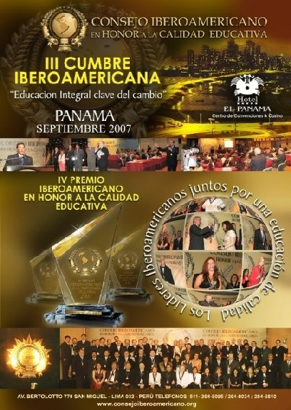

Señor,
concédeme la serenidad de aceptar
las cosas que no puedo cambiar,
el entusiasmo para cambiar las cosas que sí puedo,
y la sabiduría para comprender la diferencia entre ellas.
El Dr Marcelo Casartelli, Córdoba, Argentina, fallecido el 26
de diciembre de 07, recibió premio honorífico a la excelencia
educativa en los primeros meses de este año, otorgado por el
"Consejo Iberoamericano en calidad educativa”, por su Curso
de Esperanto en Internet.
El curso fue traducido a siete idiomas, entre ellos el chino; y, la
version francesa ha servido de base para el curso que UEA ha difundido
en África.
Nova adreso de la KURSO http://www.institutoesperanto.org.ar
en http://www.esperanto.org.ar
http://www.esperanto.org.ar/eae/c/
Bv. informu pri la shango de adreso de la retkurso
de Dro M.Casartelli.
http://www.esperanto.org.ar "curso en línea"
http://www.esperanto.org.ar/eae/c/
Tomen nota, de que el CURSO
DE ESPERANTO EN INTERNET DEL DR. M.CASARTELLI perdió su dominio
anterior por lo que
ha sido pasado a la pagina de http://www.esperanto.org.ar "curso
en línea"
http://www.esperanto.org.ar/eae/c/
atte.
RoSar

. . .
¿Qué
es el Esperanto?
- Es un idioma creado
en 1887 por el médico y lingüista polaco Dr. Lázaro Luis
Zaemenhof, con el fin específico de servir como segunda lengua de todos
para la comunicación e intercomprensión internacionales.
- Su vocabulario esta formado por raíces comunes a las grandes lenguas
de cultura (70% del latín, y el resto de origen anglosajon), de las cuales
cualquier persona conoce de antemano un 75% (por ejemplo: universala, internacia,
hotelo, teléfono, etc.)
- Las raíces, combinadas con un ingenioso sistema de sufijos y prefijos,
permiten formar miles de palabras.
- Su gramática consta de 16 reglas fundamentales, sin excepciones.
- Cada letra tiene un sólo sonido, y el acento recae siempre sobre la
penúltima sílaba.
¿Es fácil de aprender el esperanto?
- Por tratarse de un idioma lógico y racional, sin irregularidades, idiotismos
ni expresiones idiomáticas, cualquier persona puede aprenderlo en mucho
menos tiempo que el requerido para cualquier otra lengua.
- En poco más de cien años de existencia, el esperanto se ha convertido
en una lengua viviente, con el que se puede expresar, oralmente o por escrito,
cualquier pensamiento humano.
¿Por qué se dice que es "neutral" ?
- Porque no pertenece a ningún país en particular, sino a todos
por igual. Mediante el esperanto personas de todas las naciones, razas y clases
pueden dialogar en iguales condiciones "sin la desventaja de usar un idioma
ajeno frente a quien usa el suyo propio".
Cuantas personas hablan esperanto en el mundo?
- Existen millones de esperantistas diseminados en todo el mundo, y su número
crece día a día.
¿Te gustaría
tener amigos en todo el mundo?
¿Quieres viajar y conocer otros países como huésped en
casa de esperantista?
El servicio "Pasaporte" te ofrece 1.161 direcciones en 80 países
de hogares dispuestos a darte alojamiento gratuito.
¿Deseas adquirir o intercambiar conocimientos científicos, técnicos,
culturales, deportivos, etc. con personas en los cinco continentes, por correo
electrónico o postal?
La Asociación Universal de Esperanto cuenta con casi 2.000 delegados
en todo el mundo dispuestos a contestar preguntas sobre cualquier tema. Existen
también asociaciones de médicos, astrónomos, filósofos,
docentes, ferroviarios, periodistas, músicos, asociaciones juveniles,
de coleccionistas, etc., etc.
¿Te interesaría leer las grandes obras de la literatura universal,
así como libros originales y traducidos en Esperanto?
Existen también numerosas revistas de interés general y especializadas.
APRENDE ESPERANTO, el idioma internacional neutral, en forma totalmente gratuita
si lo haces a través de la página cuya dirección está
más abajo.
Ahora puedes utilizar el buscador
principal de la red, también en este Idioma
El Esperanto en nuestros días
“La igualdad lingüística en las relaciones internacionales”
Introdución al tema del 89º Congreso Universal de Esperanto.
Disertación del Dr. Humphrey Tonkin, (Pekín, China, 25 de julio,
2004)
La lengua internacional Esperanto fue creada en espíritu de igualdad.
Sus fundadores argumentaron que, si personas de diversas lenguas hablan Esperanto
entre sí, hablan en igualdad. Si yo, como hablante del inglés,
insisto en que ustedes hablen mi lengua, eso es desigualdad. Su ustedes como
hablantes, por ejemplo de la lengua china, insisten en que yo hable su lengua
en nuestras relaciones, también eso es desigualdad. El Esperanto propone
una alternativa neutral a la hegemonía de las lenguas.
Hoy en día, en las relaciones internacionales algunas lenguas están
fortalecidas y algunas debilitadas. Un país, cuya lengua no es usada
internacionalmente, debe invertir grandes sumas para instruir lenguas extranjeras
a sus ciudadanos. Si ese país quiere vender sus productos en el exterior,
debe usar otras lenguas. Si quiere crear relaciones culturales, científicas
o políticas, debe utilizar lenguas extranjeras. Sin embargo, aquellos
países cuyas lenguas son usadas vastamente en el extranjero, no deben
invertir tanto dinero en la enseñanza de lenguas foráneas, y no
necesitan utilizar otras lenguas para los intercambios científicos, políticos
o culturales. Si sus lenguas son habladas internacionalmente, pueden atraer
científicos, estudiantes, turistas.
Por lo tanto, ganan una gran ventaja por el fortalecimiento de sus lenguas.
Aquí en China, - como por otra parte también en todo el mundo
- se invierten sumas enormes en el aprendizaje del inglés, con resultados
solamente parciales - y sólo para alcanzar el mismo nivel que alcanzan
los niños pequeños nacidos hablando la lengua inglesa.
Y cuánto mayor cantidad de chinos aprenden la lengua inglesa, más
ventaja tienen los nacidos hablantes del inglés y sus países anglófonos.
Este sistema, según el cual el ser humano de una nación está
obligada a usar la lengua de otra nación para comunicarse internacionalmente,
no es equitativo. Es discriminatorio.
Los hablantes de Esperanto argumentan, que la lengua internacional coloca a
todas las personas en una posición de igualdad. Porque el Esperanto es
más fácil de aprender que muchas otras lenguas, no necesita una
inversión tan grande como el aprendizaje de otras lenguas. Si todos los
seres humanos utilizaran al Esperanto para los contactos internacionales, todos
se hallarían al mismo nivel. El Esperanto es completo, flexible, una
lengua rica en expresiones: es útil para todos los propósitos.
Él puede crear un elemento de igualdad en las relaciones internacionales.
Sin embargo muchos dicen, que el Esperanto es solamente un fantaseo, un "sueño
hermoso". Vengan a nuestro Congreso Universal. Aquí encontrarán
mujeres y hombres que lo hablan, y lo usan - que no fantasean o sueñan,
sino que están despiertos plenamente.
Para nosotros, el Esperanto no es una utopía, sino una realidad práctica.
No obstante, si queremos convencer al mundo de que el Esperanto es una solución
práctica al problema de la desigualdad de las lenguas, debemos afrontar
y comprender los contra- argumentos; debemos conocer los hechos; debemos perfeccionar
nuestra propia comprensión.
Por ello discutiremos aquí el tema: "La igualdad lingüística
en las relaciones internacionales".
Si ustedes quieren convencer a otros seres humanos acerca del valor del Esperanto,
y si quieren trabajar por el Esperanto, vengan a los encuentros sobre el tema
del Congreso y participen en la discusión. Esa discusión se efectuará
en grupos pequeños, donde tendrán ocasión de presentar
libremente sus puntos de vista.
Hemos elegido el tema para este Congreso en Pekín porque opinamos, que
aquí en China se necesita el Esperanto.
Sí, las realidades del mundo moderno hacen necesario el aprendizaje de
muchas lenguas extranjeras y también del inglés. Pero China debería
tender hacia una solución bilingüe para las relaciones internacionales:
la lengua inglesa para la vida internacional práctica actual, pero el
Esperanto para construir nuevas relaciones internacionales de igualdad en las
cuales China y U.S.A., China e India, China y Europa, China y los países
de Sur y Centroamérica, China y África, sean socios iguales y
amigos en la construcción de un mundo amistoso e igualitario.
Las ventajas prácticas del Esperanto para este país son evidentes.
Y los esperantistas las vemos diariamente en nuestro Congreso Universal, donde
los que hospedan y los hospedados colaboran en un ambiente espiritual armónico
y práctico.
He aquí la igualdad lingüística, he aquí las relaciones
internacionales verdaderas.
Entonces les pido participar en las discusiones acerca del tema del Congreso.
Yo mismo conduciré los encuentros junto a mi colega el Dr. Paulo Gubbins.
Los consideramos bienvenidos también a ustedes.
Humphrey Tonkin, lingüista, Prof. de la Universidad de Hartford, Estados
Unidos.
(Traducción de: Alfredo Valle).
El Presidente de la Academia Internacional de Esperanto visitó Uruguay
En el marco de la Feria Internacional del Libro que se realizó del 27
de agosto al 12 de septiembre de 2004, en el predio del Laboratorio Tecnológico
del Uruguay, (LATU),
el presidente de la Academia Internacional de Esperanto, profesor Geraldo Mattos,
brindó sendas charlas los días 4 y 6 de septiembre. El tema de
las mismas giró en torno a la gramática, la lingüística
y el Esperanto. La primera se realizó en el predio ferial y la segunda
en la Facultad de Humanidades.
El Prof. Mattos visitó Uruguay especialmente para esta ocasión,
fecha en la cual se festeja el 50° aniversario de la primera resolución
de un organismo de las Naciones Unidas favorable a la Lengua Internacional Esperanto.
El hecho transcendental ocurrió un 10 de diciembre de 1954 en la Asamblea
General de UNESCO que se realizó en ese momento en Montevideo, en el
Palacio Legislativo de la República Oriental del Uruguay.
Arisbel Luberto, en carácter de representante en Uruguay de la organización
que promueve la lengua internacional, invitó a visitar el stand conmemorativo
en el LATU, atendido por adherentes a la Sociedad Uruguaya de Esperanto, montado
con el apoyo de la Asociación Universal del Esperanto con sede en Rotterdam,
Holanda.
Luberto comenzó a estudiar la Lengua Internacional en la Ciudad de México
en 1981. Desde 1992 es miembro de la Asociación Universal de Esperanto
y actualmente es instructor de Esperanto en Montevideo y secretario de la Sociedad
Uruguaya de Esperanto.
9-a jaro n-ro 20 2004:4
Oficiala organo de Argentina Esperanto-Ligo
[Reta Versio]
Redaktoro: (de 1996)
Rubén T. Diaconu-Tkachenco
<rubendiaconu@yahoo.com.ar>
Redakt-kunlaboranto: Rubén L. Sánchez
Pri la subskribitaj artikoloj respondecas iliaj autoroj
AEL-TTTejo: www.esperanto.org.ar
AEL Estraro kaj Komisiitoj
Prezidanto: Alcídes P. Wentinck <wanelec@sion.com>
Vicprezidanto: René Arce <arserene2002@yahoo.com.ar>
Sekretario: Roberto Sartor <rosar@fibertel.com.ar>
Vicsekretario: Fernando Inocencio <fajro@keko.com.ar>
Kasisto: Mario J. Miranda <esperantobonaero@yahoo.com.ar>
Vickasisto: José B. Dioguardi
Instruado: Rubén L. Sánchez <esperanto@neunet.com.ar>
Arhivo: María Berna Morzán
Disvastigado: Silvia E. Rottenberg <silviarot@hotmail.com>
Cefdelegito: Rubén L. Sánchez <esperanto@neunet.com.ar>
Komitatano A ce UEA: Marcelo Casartelli <casartelim@uolsinectis.com.ar>
UEA-kotizperanto: Mario J. Miranda
Argent-EJO:
Elisa Vázquez-Abraham: <elisa_vazquezabraham@yahoo.com.ar>
Enhavo
Komitata Salutvorto
89° UK: “La igualdad lingüística en las relaciones internacionales”
Sukcesa Datreveno de UNESCO-Rezolucio en Urugvajo
Turisme: Someras en Argentino
AEL-Informas
Novajoj
El la Leterkesto
Anoncoj
Kalendaro 2005
19-23 julio: 40-a Brazila Kongreso de Esperanto, Porto Alegre, Brazilo.
23-30 de julio: 90-a Universala Kongreso de Esperanto, Vilno, Litovio.
31julio-7augusto: 61-a Internacia Junulara Kongreso, Zakopane, Pollando.
*
Libroservo
Para obtener material impreso en y/o sobre Esperanto consulte al Libroservo
de AEL,
visite nuestra página Web,
o escriba a: René Arce, 9 de Julio 1586, X5000 Córdoba
Visite la página Web de AEL:
www.esperanto.org.ar
y envíe su opinión, sugerencias y/o informe, a: <esperanto@neunet.com.ar>
=======================================================
Sendas:
Redakcio de
Argentina Esperanto-Ligo
Calles 119 y 122
AR-H3700 FTT Pres. R. Sáenz Peña, Chaco
Argentina
=======================================================
¡Bajá un diccionario
para traducir en 19 idiomas, totalmente gratuito!
Traduce al inglés,
francés, italiano, alemán y ¡esperanto! en otros idiomas.
¡Lástima que no lo hace con textos si no palabras, pero saca
del apuro!.
La dirección es
http://www.freelang.net/espanol/
Una dirección para acceder al vocabulario
esperanto- castellano; castellano-esperanto
http://ohui.net/aulex/eo-es/
. . .
El 21 de setiembre 06 comenzó a emitir Radio
Aktiva, con programas en Esperanto, en español y bilingüe.
Esperamos la presencia de todos y agradeceremos cualquier información
o
comentarios que puedan enviarnos sobre nuestra emisión.
Todos los mensajes envíenlos a:
La radio se puede escuchar con cualquier reproductor
que reconozca el formato .pls listas de sonido (playlist). Nosotros lo probamos
con Winamp y Windows Player y funciona perfectamente. Basta con entrar a la
siguiente dirección y hacer clic sobre "Escúchanos ahora".